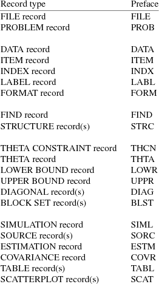
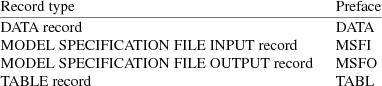

The data set consists of a sequence of data records, essentially one for each different observation (although see the discussion below about data records with missing dependent variable data items). A data record, in turn, is a sequence of data items (the same number of data items in each data record). One of these data items is the associated observation, also called the dependent variable (DV) data item. The other data items in the data record may be loosely regarded as specific items needed to predict the DV data item under the user-specified statistical model. The data items of each data record are placed on a number of contiguous FORTAN records, and this set of FORTRAN records is read by NONMEM as a unit, i.e. with a single I/O list, under a user-supplied FORTRAN format specification. The format specification may consist of E, F, and X format codes. An I code is not allowed. For example there may be nine data items per data record, and these may be distributed over two FORTRAN records.
Example B.1.i:
1.2 3.6 4.7 .27E01 Record 1
0.5 9.8 6.5 .12E00 3 Record 2
and read with the format specification (3(F3.1,2X),E6.2/3(F3.1,2X),E6.2,2X,F1.0).
In NONMEM the data records with DV data items associated with a given individual are grouped together. This is accomplished in part by including in each data record a data item identifying the individual with which the DV data item in the record is associated. This data item is called the identification (ID) data item. An ID data must always appear in the data record, except when every data record would ordinarily have a different ID data item, in which case the ID data items are not necessary. In the above example the ninth data item might be the ID data item, although there is no requirement that the ID data item be integer-valued. The grouping of the data records is acomplished by including ID data items in the data records and by arranging that all data records with the same ID data item be contiguous in the data set. Two or more data records are understood to be contiguous if the sets of FORTRAN records on which the data items of these data records are placed (one set of FORTAN records per data record) occur contiguously in the data file. The data records with the same ID data item are collectively called an individual record. This ID data item is also called the ID data item of the individual record.
ID data items can be constructed with a little more flexibility than indicated above. The ID data item of an individual record A must differ from that of the following individual record B. However, it can be the same as the ID data item of the individual record following B. The rule is that only the two ID data items of two contiguous individual records must differ.
As mentioned in section A.5, when the statistical model has non-nested random effects, the observations are regarded as arising from different individuals, even if, indeed, they do not. The observations in simple nonlinear regression models, for example, are so regarded. In this situation each data record containing an observation should be contained in a different individual record.
Data records may be designated as missing DV data items. Such records are useful for a variety of reasons. For example, suppose that the prediction of the DV data item depends on the value of time, another data item in the data record. Suppose also that one wants to plot predictions vs time, and for this purpose, one wants to develop predictions at time points other than those for which there correspond DV data items in the data set. One can construct additional data records with these time points and designate them as missing DV data items. Predictions will be generated for these data records, and these predictions can appear in tables and be used in scatterplots. There will be DV data items on these records, but they will be "dummy" items. The user can let them be zero or any other value(s). NONMEM will not use the DV data items on these records - not for the purpose of estimation. However, all data items on all records will be used for the purpose of constructing tables. For the purpose of constructing a scatterplot where one of the axes of the plot corresponds to the DV data item, or the residual data item, or the weighted residual data item, data records designated as missing the DV data item are not used.
If there are to be data records designated as missing DV data items, then all data records must have a missing DV (MDV) data item. A MDV data item must be either zero or one. A zero MDV data item means that the DV data item in the record is not missing; a one means that it is missing. If there are MDV data items, there must also be ID data items (even if there is but one data record in each individual record). A data record with MDV data item equal to zero is called an observation record. When there are no MDV data items in the data set, all data records are observation records. An individual record need not have any observation records; that is, it may be comprised only of data records designated as missing DV data items.
In a model with one-level nested random effects there are random interindividual effects, and nested within them, there are random intraindividual effects. The random interindividual effects may be called random level-one effects, and the random intraindividual effects may be called random level-two effects. (There are two levels of random effects, but there is only one level of nesting.) In a statistical model for the DV data items, the values of random level-one effects are different only for DV data items in different individual records. The ID data items are used to group data records into individual records. The ID data item is also called the level-one (L1) data item, and an individual record is also called a level-one record. Now suppose that multivariate observations are obtained from each of a number of individuals. In the statistical model the values of random level-two effects are different only for DV data items that are elements of different observations. (If all observations are univariate, the values of random level-two effects are different for all DV data items.) Therefore, when there are multivariate observations modeled with one-level nested random effects, another type of data item must be used to group data records according to the observations with which their DV data items are associated. This data item is called the level-two (L2) data item. The grouping of the data records by observation is accomplished by including L2 data items in the data records and by arranging that all data records related by the same L2 data item be contiguous in the data set. The data records related by the same L2 data item are collectively called a level-two record. This L2 data item is also called the L2 data item of the level-two record. Obviously, a level-two record should be totally contained within a level-one record.
L2 data items can be constructed with a little more flexibility than indicated above. The L2 data item of a level-two record A must differ from that of the following level-two record B. However, it can be the same as the L2 data item of the level-two record following B. The rule is that only the two L2 data items of two contiguous level-two records must differ.
The DV, ID, MDV, and L2 data items are the data items in the data set that are of particular concern to NONMEM, and they are called the NONMEM data items. Other data items in the data set are of concern only to user-supplied subprograms.
The control records contain the instructions to NONMEM. The sequence of control records is called the control stream. Each control record is comprised of one or more FORTRAN 80 character records. All control records begin with a 4 character preface such as ESTM, SCAT, and THTA (abbreviating ESTIMATION, SCATTERPLOT, and THETA, respectively). The fields on a control record begin in position 9, except where noted otherwise. If a control record needs to be continued on more than one FORTRAN record, the fields on each of the continuation records begin in position 9 also, and the first 8 positions are left blank.
Example B.2.i:
|
THTA 1.1 2.2 3.3 ... 9.9 |
|||
|
10.10 11.11 (continuation record) |
|||
|
column no.: 9 1 2 7 |
|||
|
7 5 2 |
Some control records have only one field, 72 characters long, in which a character string is placed. Such records are said to have character format. They cannot be continued.
Example B.2.ii
|
PROB THE THEOPHYLLINE DATA |
|||
|
column no.: 9 |
Most control records have one or more 4 character fields in which integers are placed. These integers are to be right-adjusted in the fields. This type of control record has at most 18 fields per FORTRAN record. Such records are said to have integer format.
Example B.2.iii:
|
SCAT 0 2 |
|||
|
column no: 1 1 |
|||
|
2 6 |
Some control records, like that in Example B.2.i above, have one or more 8 character fields in which FORTRAN fixed point numbers are placed. This type of control record has at most 9 fields per FORTRAN record. Such records are said to have fixed point format.
There are 21 functional types of control records, as listed in Table B.2.i. However, many of these are optional.
Table B.2.i Control Record Types

The record types are divided into five major groups. The first group is comprised of the FILE and PROBLEM records. The second group is comprised of the data set specification records; these records define the characteristics of the data set. The third group is comprised of the model specification records; these records, along with the user-supplied subroutine PRED, define the simulation/data-analytic model. The fourth group is comprised of the initial estimate records; these records give the initial parameter estimates, or information that can be used to obtain these estimates. They also may contain information that can be used to obtain final parameter estimates. The fifth group is comprised of the task specification records; these records define the tasks that are to be implemented in order to simulate/analyze the data.
The control stream is stored in a file. There are other files used by NONMEM (for a complete listing of these see NONMEM Users Guide III). For example, the data set can be stored in a separate file. (The data set can also be "embedded in the control stream", in which case it is effectively stored in the file containing the control stream.) The file mentioned in point v of section A.3 is another example. It is called a Model Specification File. Each of these two examples is an example of a file that exists at the user’s option (unlike the file containing the control stream) and that must be opened by NONMEM itself, i.e. instructions to open the file must be given to NONMEM. This type of a file is called an optional NONMEM file. (There may be files that are opened by user-supplied subroutines. These are regarded differently. For discussion of these see NONMEM Users Guide, Part II.)
The file records contain the instructions to open the optional NONMEM files. The sequence of file records is called the file stream. Each file record is formatted exactly like a character-formatted control record (see above), with the exception of the problem delimiter record. The name of a file is placed in the character field (left adjusted). There are 4 functional types of file records, as listed in Table B.3.i.
Table B.3.i File Record Types

All these records are optional. They may occur in any order, with the one exception that when a MODEL SPECIFICATION FILE INPUT record and MODEL SPECIFICATION FILE OUTPUT record both occur for the same problem, the latter must preceed the former. There can be only one file record of each type per problem. The file records for any one problem must be followed by a problem delimiter record, i.e. a record consisting of asterisks in positions 1-4. If there are no file records with a problem, only the problem delimiter record should appear.
When the data set is contained in a separate file, the name of this file is placed in the field of the DATA record. A Model Specification File occurs in two ways, as a file to be input when continuing a search, and as a file to be output to allow a search to be continued later. The MODEL SPECIFICATION FILE INPUT record and the MODEL SPECIFICATION FILE OUTPUT record correspond to these two files; the name of the file is placed in the field of the corresponding record. Each table generated in a given problem may be stored in a common file called a Table File The name of the Table File is placed in the field of the TABLE record.